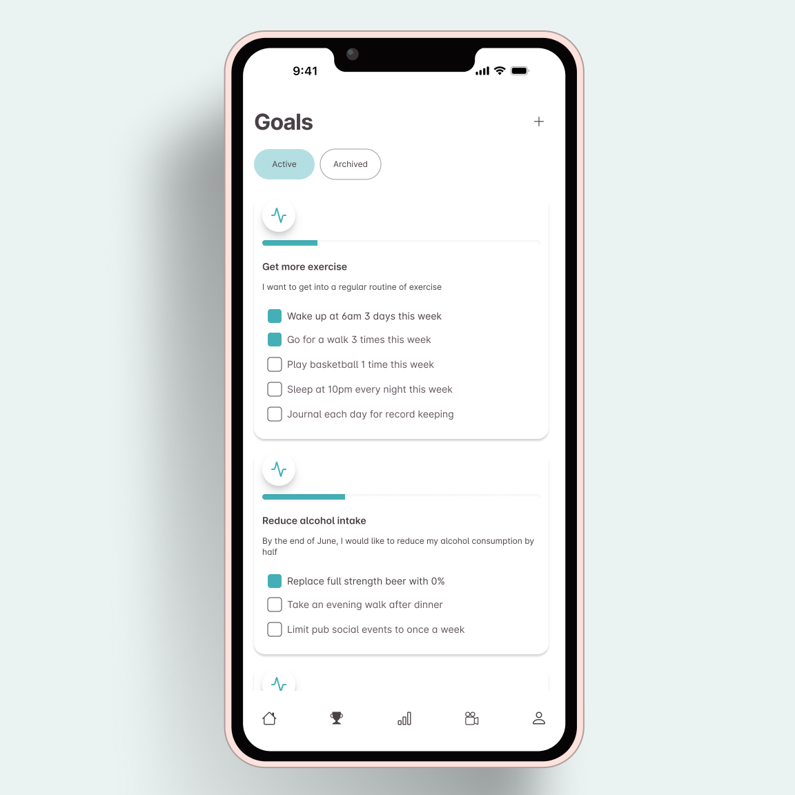
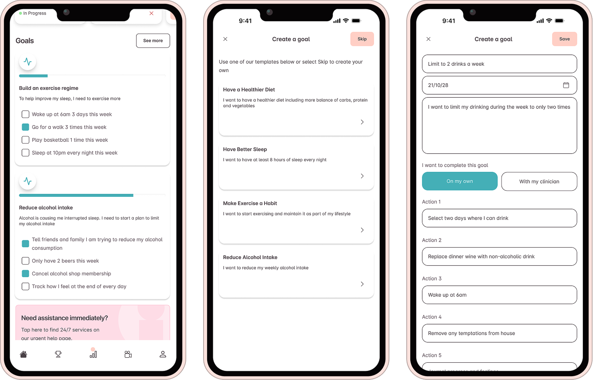
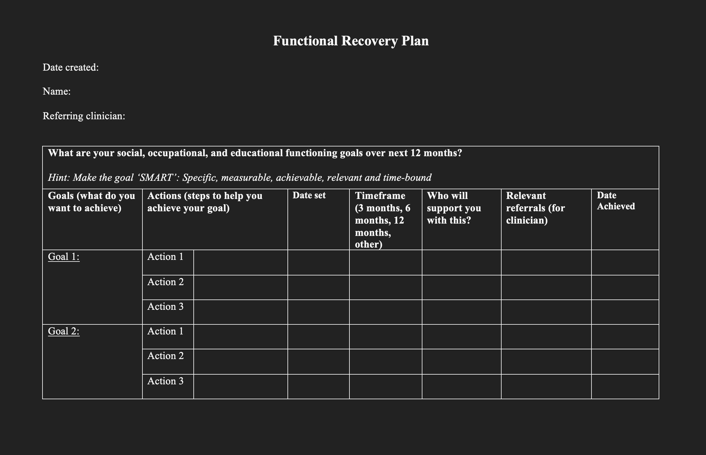
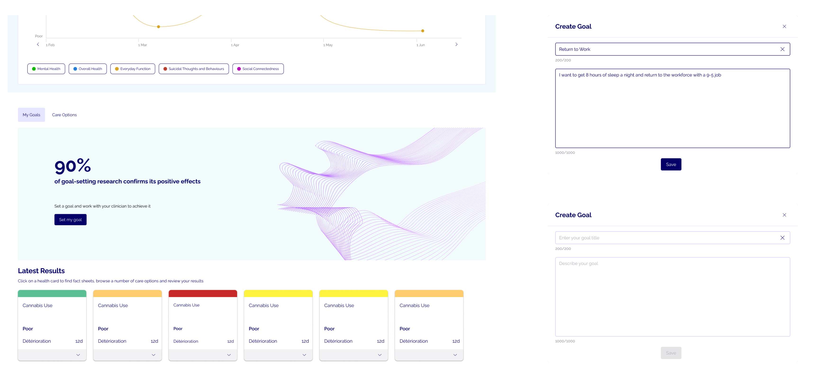
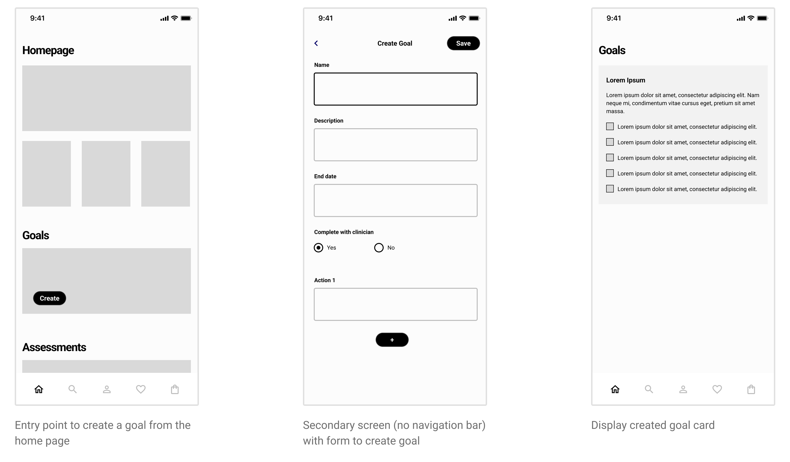
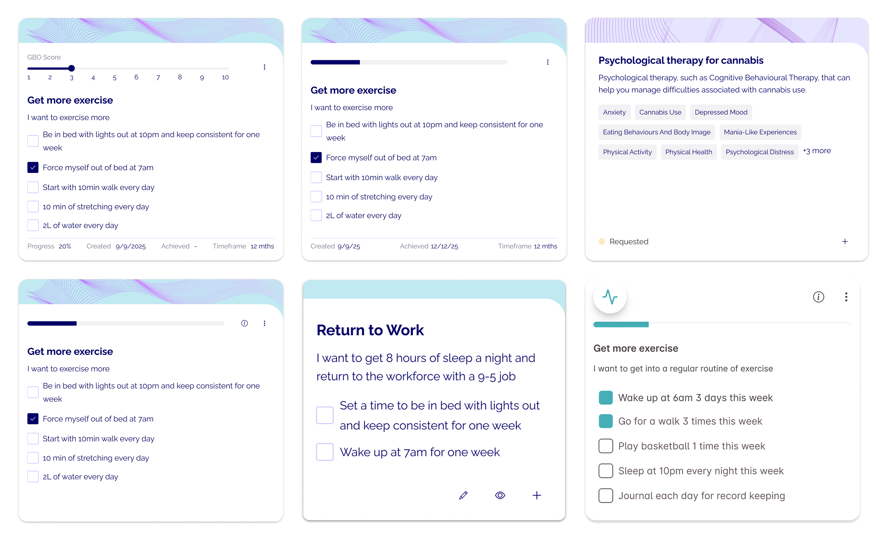
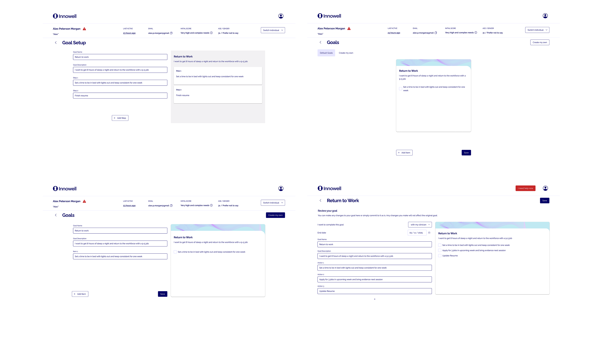
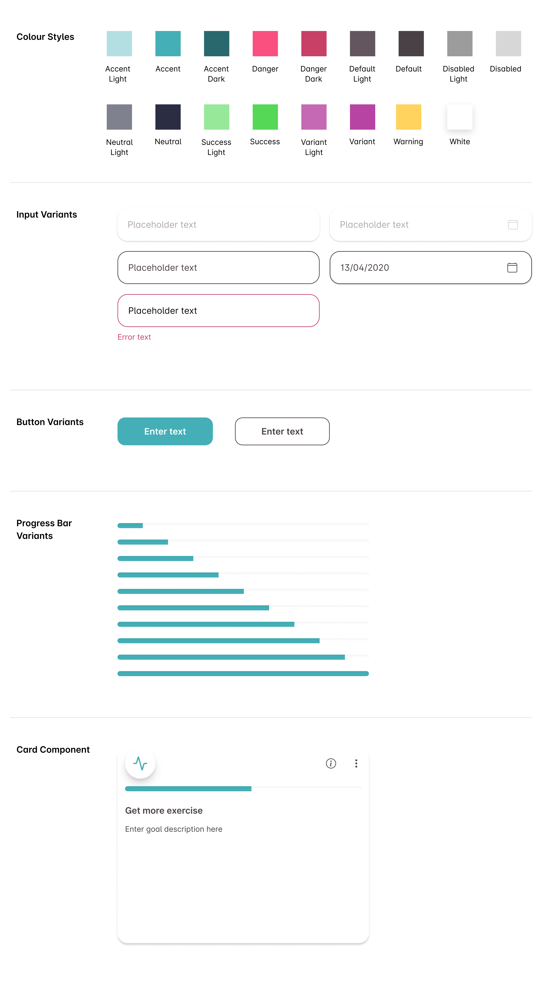
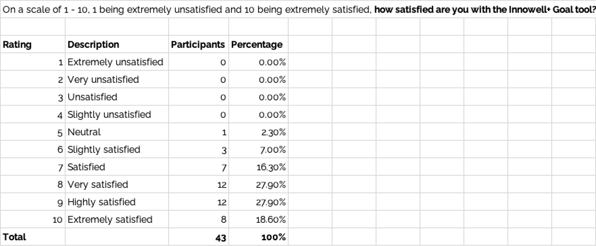

Goals
INNOWELL
Patient’s use a range of tools to improve their mental well-being including domain assessments,
content and goal setting. Throughout the industry, goal setting is done either manually on pen and
paper or on outdated mediums like Word or Excel. These methods are susceptible to easily being lost
or at best, remain isolated from other patient data.
With Innowell+, we set out to digitise the goal setting process to allow patients and clinicians
instant access
to their goals while also tracking the data to strengthen our support in their mental health
journey.
Challenge
Innowell+ required a feature that would drive usage whilst also providing benefit to improving a
user’s mental wellbeing. Goal Setting is a commonly used methodology and was unanimously agreed on,
in
conjunction with our clinical research partners at the University of Sydney’s Brain and Mind Centre,
to be the best feature to provide the most value to patients.
Creating a digital goal setting feature inside Innowell+ would supercharge the app by
- Eliminating the risk of losing paper-based goals.
- Enable data that can be tracked and applied to the patient’s overall context
- Enable more seamless communication with clinicians e.g. a patient could create a goal and submit it for the clinician to review

Workflow
Using the double diamond methodology, my first step was exploring the problem space further and
defining what we wanted to achieve. I had a number of meetings with Mental Health Services and the
Brain and Mind Centre (BMC) - who were trialling their own paper-based version
of goal setting (named Functional Recovery Plan) - to understand how my thinking aligned with their
direction.
The BMC genuinely supported and encouraged the development of the feature, outlining the importance
of goal setting in the mental wellbeing treatment of patients. Whilst they had their ideas on how
the feature should function - for example wanting the process to be done in one sreen, they strongly
supported my decision to encourage goal creation to
follow the SMART framework (Specific, Measurable, Achievable, Relevant and Time-Based), a framework
designed to provide maximum effectiveness by encouraging patients to measure their goals against
these five pillars.
During research sessions with various services where I presented my ideas and plan, the feedback was
very encouraging with the usual response being “When can we have it?”.
From these discussions it became very clear that there needed to be a digital solution to
the current manual,
paper-based goal tracking method and that this digital solution could be linked to other data in a
patient’s mental health journey.

After the research sessions and defining the problem, the next stage was understanding the
requirements to solve the problem and how we would measure it. The first step was to start exploring
user flows in Figma.
Exploring the BMC’s suggestion to keep the user flow to one step, I wanted to see if goal creation
could be done in a modal. A one-click entry point would display a modal with a form to enter the
goal details then after clicking a ‘Create’ and the goal would display on the homepage. In theory
this made sense but after exploring designs in Figma I discovered that the modal was
becoming too complicated and crucial steps were being missed.
Sometimes what may seem the most simple solution is not always the case.

I quickly pivoted and explored a scenario where the user journey was broken into steps and from a high level, it looked something like this
- 1. Entry point to create a goal
- 2. Add goal details including Goal name, end date and actions
- 3. Allow option for clinician review of goal
- 4. Display goal
- 5. Archive goal
Though I felt this could be achieved in one screen, I was comfortable in breaking the flow into steps to help keep a clean flow and guide the user to complete their task and minimise error risk and ultimately, most of the risk lied in the goal creation from. To mitigate this risk and tighten the user journey, we needed proper validation on three things
- 1. The input fields - character limits to ensure inputs remain focused and UI is not compromised
- 2. Number of action items - Limiting these to 5 will help guide the user to determine how to structure their goal
- 3. Number of goals - Without limiting the number of goals a patient can create, there will be a reduced focused and a risk of goals being left incomplete.
If I could keep the journey succinct to no more than 3 steps with logical validations, it would be a result I would be happy to present for feedback.

Designing the goal cards, I had the designer’s age-old problem of organising
vast amount of information in a small space. As these cards could be displayed on the Home Screen, I
wanted to keep them at a relatively small size to maintain a visual balance. Elements within the
card that I needed to consider were Goal Based Outcome (GBO) score, goal name, goal description,
progress bar, date created, end date and actions such as archive and delete.
The GBO is a slider that allows the user to rate how they are tracking with the goal. It was an
element that came to my attention while working on a tender for the Canadian government and I had
included it for the tender. I explored various input options such as a slider or input field however
in the end, we decided to remove it as the tender bid failed and we
believed, along with the BMC, it was not a requirement at this early stage.
Developing the information architecture of the card, I decided that information such as date
created, end date, progress percentage and achieved date could be grouped behind an information
tooltip as they were supplementary, and pushing this further having an achieved date was redundant
because any goals that had
been achieved were stored in a separate section.
Actions such as delete and edit did not need to be exposed all the time, so they could be placed
behind an overflow button. Placing the tooltip and overflow menu subtly in the top right of
the goal card opened the card up with more space which helped focus on what’s important - goal
information and action items.
By organising the information architecture, the design of the goal card came together almost by
itself. Placing the information tooltip and overflow menu in intuitive locations, created space for
the progress bar. With the top section fitting nicely, the remaining space housed the goal
information perfectly.

Below are some explorations for the Goal creation form screen on desktop. There was the rare issue of having too much space however, an idea I had was to split the screen into two columns; the form on one side and a preview of the Goal card on the other. Testing the idea with users showed that they loved being able to see their Goal card update in real time.

At the same time as the new mobile app (Innowell+), the business had a change of leadership and with that came a rebranding - this is why some of the designs differ between web and mobile. So a side task during the Goals design process was to update the current design system (that I had previously created). Below are a sample of the components used in this feature.

Now that I was comfortable with the flow and designs, it was time to review with
the BMC. They had suggested having the ability for a patient to create a goal from a template citing
that a blank form may be overwhelming to some patients, making the task seemingly too large and
causing them to avoid it all together. This made sense and so, before the goal form, I included a
screen listing goal templates that the patient could skip if they wanted to create a goal on their
own.
I was initially hesitant on BMC’s suggestion as I knew this would be scope creep because including
default templates was more than just adding templates - it meant that there had to be a management
portal, either for our company, the services or both. Planning and building out such a portal would
increase development time so for our first release, I decided the development team would be made
aware of the need for a management portal but for the first version, we would release with a default
set of templates across all services and they would be built knowing a management portal was to
come.
By now, I was feeling confident we had a solid feature that would address the problem we wanted to
solve. After presenting to the wider team, I put together the required resources:
- Confluence document explaining the why, what and how. Important for the business including senior leadership and sales department.
- Final pixel-perfect UI and up-to-date design system to make developers and testers life as easy as possible.
- Clear and structured user stories to ensure a smooth build process.
I worked closely with the developers to answer any queries or missed acceptance criteria during the build and after one 2 week sprint, the Goals feature was released to the desktop platform and the mobile app.
Figma Prototypes
Explore a prototype of the Goal feature within Innowell+. If the Figma embed below does not work, you can click here to view the prototype in a new tab.
Outcomes
During the process, discussions around measuring the success of the feature was challenging. Ideally measuring how a patient’s mental health improved thanks to the Goal feature would be ideal, but this was impossible. So, leadership team and I settled on target metrics of
- 1,000 goals created in the first month of release
- Over 80% user satisfaction with the feature, measured with a survey

Both of these metrics were exceeded with
- Over 2,000 goals set in the first month of release
- Over 90% of 43 clinicians that reponded to the survey were satisfied with the feature
Furthermore. we believe the goal feature was a key driver in an increase in downloads. Goals was
released not long after the app launch so while it was difficult to link number of downloads to the
feature, clinicians explicitly spoke about encouraging their patients to download the app to use
goals.
Leading this project while navigating its challenges, seeing my ideas come to life, exceeding the
goals we set out for the feature
and knowing that my work had a direct impact on people's lives was not only personally rewarding but
encouraged my growth as a product designer.